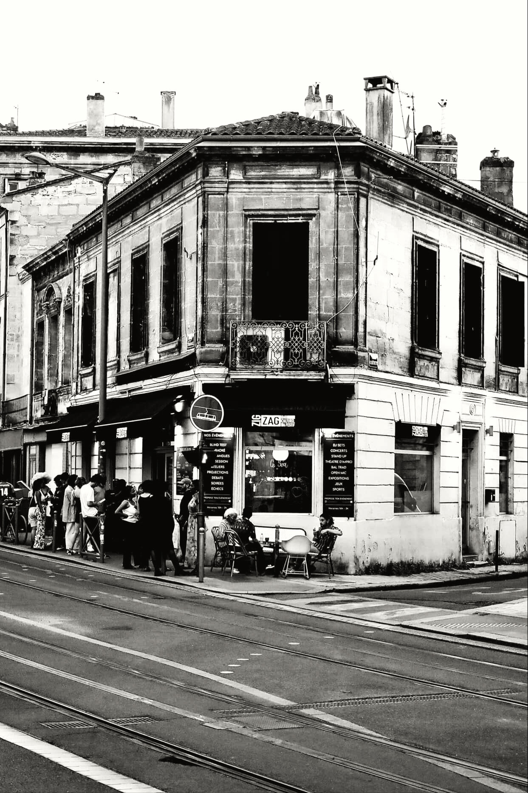
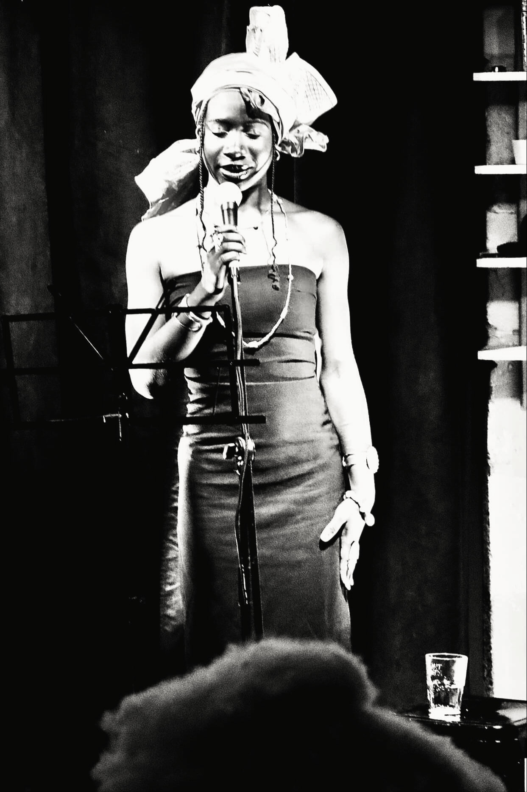
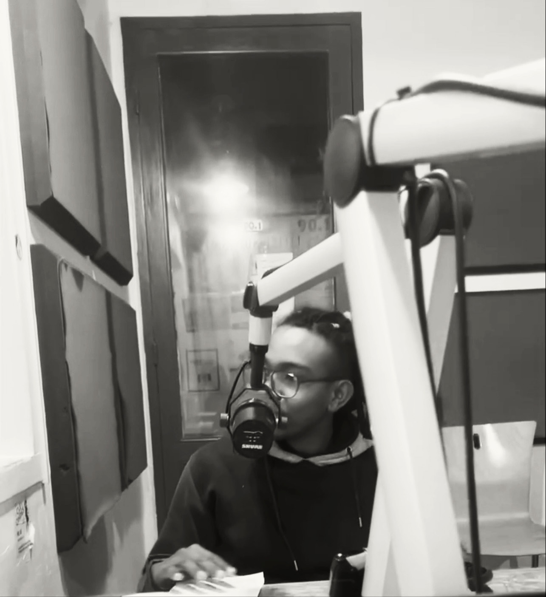
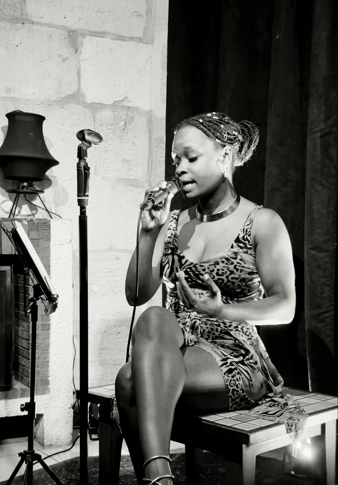

Au cœur de l’Empire — Association & émission radiophonique
C’est un projet que je mène avec des ami·es depuis maintenant quelques mois. L’association (loi 1901) fait trois choses : organiser des événements culturels, produire des performances artistiques, et animer une émission radiophonique.

L’émission est diffusée tous les deuxièmes lundis du mois sur Radio Clé des Ondes. Chaque numéro traite d’un sujet qui traverse le présent : le génocide en Palestine, la guerre d’accaparement au Soudan, le génocide au Darfour, le génocide en RDC, les révolutions oubliées de Madagascar. Mais le format n’est pas celui d’un talk politique. L’idée, c’est d’explorer ce *pour quoi* on lutte — les mondes qu’on veut construire, les liens qu’on veut tisser — pas seulement ce *contre quoi*. La radio devient un espace de réflexion, pas un espace de dénonciation.

Diaspoétique est un événement qu’on a créé par et pour les diasporas. Le principe : des personnes issues de l’immigration expriment leurs maux, leurs mémoires, leurs imaginaires — avec leurs mots. Poésie, récits, performances, prises de parole. L’objectif est simple : faire entendre des voix qui sont souvent reléguées aux marges, dans un cadre où elles n’ont pas à se justifier.
Le fonctionnement interne est fondé sur la co-responsabilité et le concept de Ko Kanissa : prendre soin de soi, des autres, du collectif. Concrètement, ça veut dire qu’on s’arrête quand quelqu’un est en difficulté, qu’on redistribue les tâches si la charge est déséquilibrée, et qu’on refuse les dynamiques de domination interne. C’est pas un slogan : c’est ce qui fait que le collectif tient.
Mon rôle dans le projet

C’est le côté « que l’association existe encore dans trois mois ». Je gère les comptes, les dons, le budget des événements. Je m’occupe des déclarations, des virements, de la paperasse. C’est pas glamour, mais c’est ce qui permet aux autres de se concentrer sur la création. En co-présidence, je partage la prise de décision avec ma co-présidente : on valide les partenariats, on fixe la programmation, on arbitre quand il y a un désaccord.
Je participe à l’élaboration des scènes et des performances. Concrètement, ça ressemble à ça : on part d’un thème (une histoire, un lieu, une mémoire), on écrit des textes, on structure les séquences, on décide du rythme, des silences, des transitions. J’écris des passages, je propose des mises en scène, je teste devant le groupe avant la date. C’est un travail d’atelier : on répète, on coupe, on réécrit. Je ne reste pas en coulisse. J’interprète des textes, je participe aux performances live. C’est un rapport au public qui n’a rien à voir avec une conférence ou une présentation de résultats : y’a pas de diaporama, pas de Q&A, pas de « merci d’écouter ». Y’a juste toi, ta voix, et le silence de la salle. C’est plus brutal, et c’est pour ça que ça me plaît.
Ce que ce projet m’apporte concrètement

L’écriture d’abord. En bioinformatique, j’écris du code, de la documentation, des articles scientifiques. Ici, j’écris des textes qui vont être dits à voix haute, dans un théâtre, devant des gens. La contrainte est différente : il faut que ça sonne juste quand c’est lu, pas juste quand c’est lu par les yeux. C’est un travail de rythme, de souffle, de silence. Ça me force à réécrire dix fois un passage qui, sur le papier, semblait correct. Ensuite, la gestion collective. Gérer un budget d’association, c’est pas la même chose que gérer un budget de projet R&D. Y’a pas de directeur qui valide, pas de ligne hiérarchique. C’est le collectif qui décide, et moi je dois rendre des comptes à des pairs, pas à un supérieur. Ça m’a appris à argumenter sans imposer, et à accepter une décision que je ne partage pas à moitié, tant que le collectif est aligné.
Il y a aussi un parallèle que je n’avais pas vu avant. En bioinformatique, je passe mon temps à rendre des données lisibles pour des chercheurs. Ici, je fais la même chose mais avec un enjeu différent : rendre une histoire lisible pour un public qui n’a pas forcément le contexte. Le problème de fond est le même — comment faire passer une information complexe sans perdre le public — mais les stakes sont différents. Quand un chercheur ne comprend pas mon pipeline, il relit la doc. Quand un spectateur ne suit pas un texte, il sort. Enfin, et c’est peut-être le plus important : ce projet me donne un espace où je ne suis pas « le bioinformaticien ». Sur scène, dans un texte, en train d’écrire une scène, je ne suis pas celui qui code des pipelines. C’est libérateur, et c’est important de garder cette deuxième vie active.